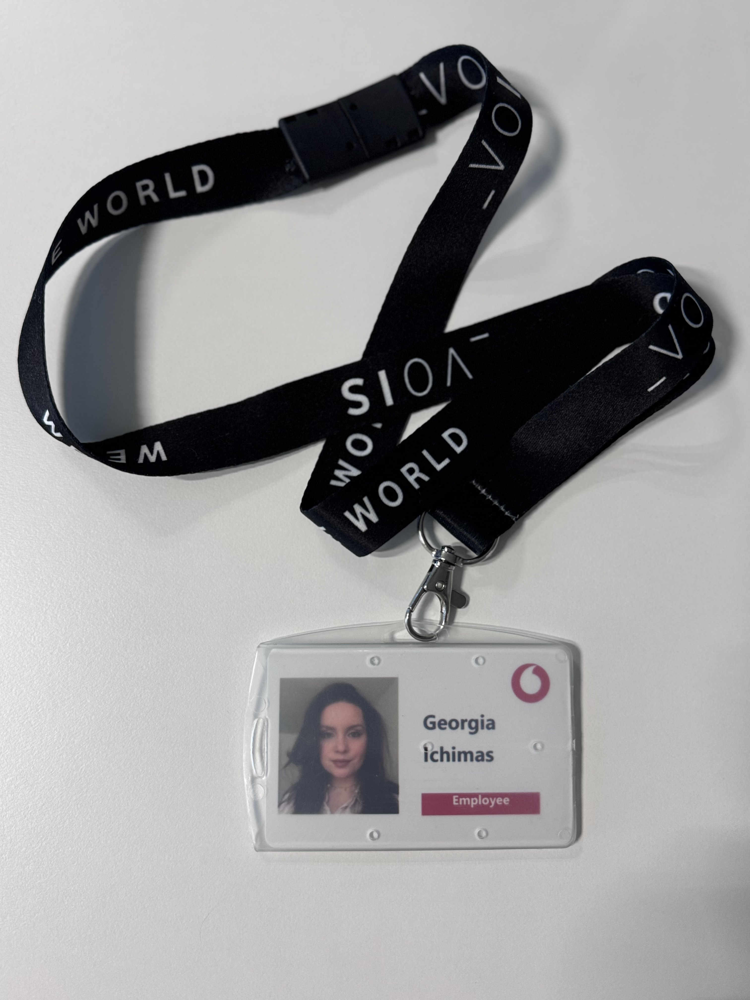

I am not new to the IT field, having gained experience as an IT Project Manager and at a later stage as a Scrum Master.
One of the most exciting projects I've been part of recently involved a collaboration between Vodafone Germany, Vodafone(Ziggo) and Oracle.
They developed a platform similar to Azure, essentially creating their own cloud infrastructure. My role was to manage several multicultural teams, which presented challenges, particularly with time zone differences.
We successfully delivered database migrations from on-premises systems to OCI (Oracle Cloud Infrastructure) 6days/week with 24h support from the teams located in India or Egypt.

Having said that, one of the reasons why I've decided to join HBO-ICT was my eagerness to learn and gain deeper technical knowledge and have a more in depth overview of what a role like Scrum Master, or Software Engineer or even Product Owner would look like.
I've navigated so far without having the proper 'tools' and that came together with a lot of challanges and eventual blockers.
Resuming, I do have a good motivation not only personal but as well professional and HZ University and its program HBO-ICT are one of the best opportunities I had in the past few years and I am more than thrilled to allow myself this time to sharpen my knowledge and my skills.
I learned about HZ University of Applied Sciences through friends, and while exploring the website, I discovered the ICT program, which caught my interest.
Here are a few key elements that cought my interest: